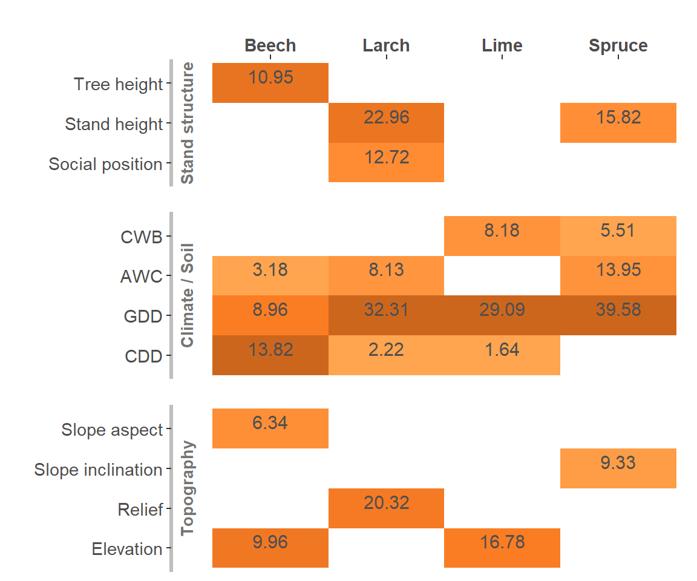

6 Species comparison
6.1 Variable importance
6.2 Model selection
6.3 Model prediction accuracy
6.4 Coefficients
6.4.1 Reference models
Reference models with random slopes for warming and chilling never converged, even when warming was simplified to a linear term only. Models with a random slope for warming but not chilling converged only for Larix decidua and Tilia cordata, but not Picea abies and Fagus sylvatica. In general reference models for Fagus sylvatica had more conversion issues than reference models of other species.
6.4.2 Best models
6.4.3 Parsimonious models
6.5 Effects of variables

6.5.1 Effects of interactions